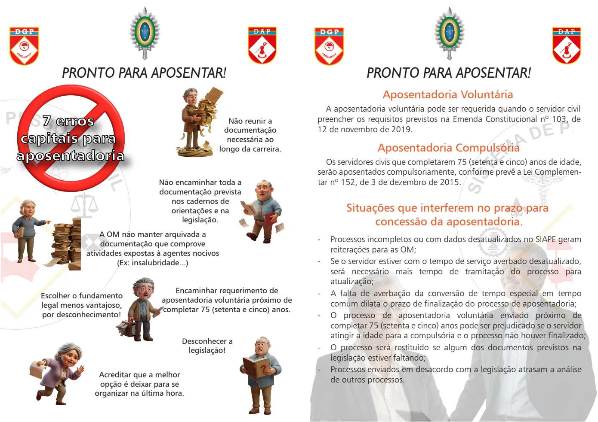
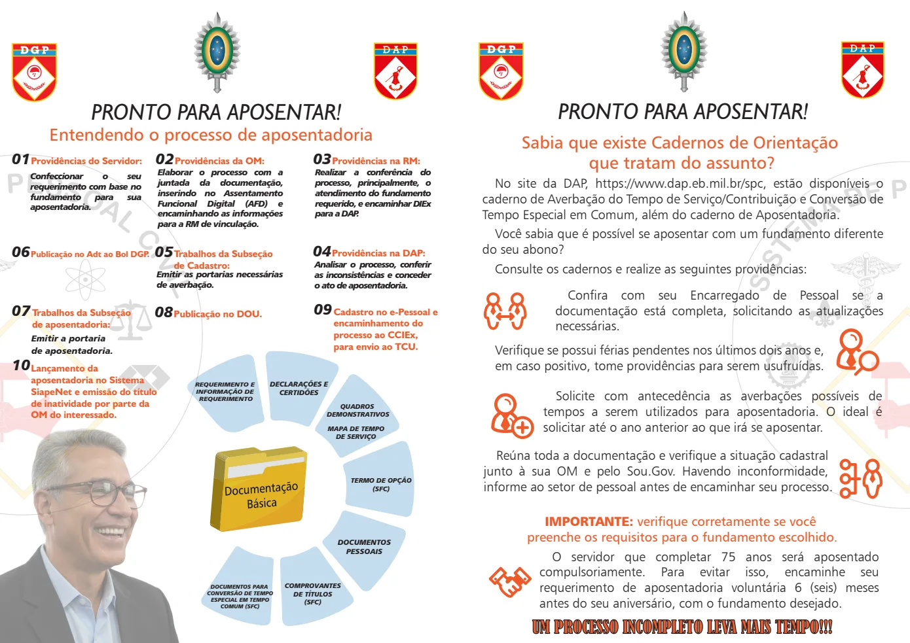

Texto extraído da edição fornecida, sem atualização normativa. Consulte a página original para conferir tabelas, formulários e instruções ilustradas. A numeração dos links corresponde à página do arquivo PDF.
Preparação para aposentadoria
PDF · p. 1Aposentadoria Voluntária
PRONTO PARA APOSENTAR!
A aposentadoria voluntária pode ser requerida quando o servidor civil
preencher os requisitos previstos na Emenda Constitucional nº 103, de
12 de novembro de 2019.
Aposentadoria Compulsória
Os servidores civis que completarem 75 (setenta e cinco) anos de idade,
serão aposentados compulsoriamente, conforme prevê a Lei Complemen-
tar nº 152, de 3 de dezembro de 2015.
Situações que interferem no prazo para
concessão da aposentadoria.
- Processos incompletos ou com dados desatualizados no SIAPE geram
reiterações para as OM;
- Se o servidor estiver com o tempo de serviço averbado desatualizado,
será necessário mais tempo de tramitação do processo para
atualização;
- A falta de averbação da conversão de tempo especial em tempo
comum dilata o prazo de finalização do processo de aposentadoria;
- O processo de aposentadoria voluntária enviado próximo de
completar 75 (setenta e cinco) anos pode ser prejudicado se o servidor
atingir a idade para a compulsória e o processo não houver finalizado;
- O processo será restituído se algum dos documentos previstos na
legislação estiver faltando;
- Processos enviados em desacordo com a legislação atrasam a análise
de outros processos.
Não reunir a
documentação
necessária ao
longo da carreira.
Escolher o fundamento
legal menos vantajoso,
por desconhecimento!
Acreditar que a melhor
opção é deixar para se
organizar na última hora.
Desconhecer a
legislação!
Não encaminhar toda a
documentação prevista
nos cadernos de
orientações e na
legislação.
Encaminhar requerimento de
aposentadoria voluntária próximo de
completar 75 (setenta e cinco) anos.
7 erros
capitais para
aposentadoria
PRONTO PARA APOSENTAR!
A OM não manter arquivada a
documentação que comprove
atividades expostas à agentes nocivos
(Ex: insalubridade...)
PRONTO PARA APOSENTAR!
Ver página original — tabelas, imagens e diagramas

Etapas do processo
PDF · p. 2Entendendo o processo de aposentadoria
01Providências do Servidor: 02Providências da OM:
Elaborar o processo com a
juntada da documentação,
inserindo no Assentamento
Funcional Digital (AFD) e
encaminhando as informações
para a RM de vinculação.
03Providências na RM:
Realizar a conferência do
processo, principalmente, o
atendimento do fundamento
requerido, e encaminhar DIEx
para a DAP .
Confeccionar o seu
requerimento com base no
fundamento para sua
aposentadoria.
05T rabalhos da Subseção
de Cadastro:
Emitir as portarias necessárias
de averbação.
06Publicação no Adt ao Bol DGP .
07T rabalhos da Subseção
de aposentadoria:
08Publicação no DOU. 09Cadastro no e-Pessoal e
encaminhamento do
processo ao CCIEx,
para envio ao TCU.
10
Emitir a portaria
de aposentadoria.
REQUERIMENTO E
INFORMAÇÃO DE
REQUERIMENTO
DECLARAÇÕES E
CERTIDÕES
MAPA DE TEMPO
DE SERVIÇO
QUADROS
DEMONSTRATIVOS
TERMO DE OPÇÃO
(SFC)
DOCUMENTOS
PESSOAIS
COMPROVANTES
DE TÍTULOS
(SFC)
DOCUMENTOS PARA
CONVERSÃO DE TEMPO
ESPECIAL EM TEMPO
COMUM (SFC)
PRONTO PARA APOSENTAR!
04Providências na DAP:
Analisar o processo, conferir
as inconsistências e conceder
o ato de aposentadoria.
Lançamento da
aposentadoria no Sistema
SiapeNet e emissão do título
de inatividade por parte da
OM do interessado.
No site da DAP , https://www.dap.eb.mil.br/spc, estão disponíveis o
caderno de Averbação do Tempo de Serviço/Contribuição e Conversão de
Tempo Especial em Comum, além do caderno de Aposentadoria.
Você sabia que é possível se aposentar com um fundamento diferente
do seu abono?
Consulte os cadernos e realize as seguintes providências:
Confira com seu Encarregado de Pessoal se a
documentação está completa, solicitando as atualizações
necessárias.
Solicite com antecedência as averbações possíveis de
tempos a serem utilizados para aposentadoria. O ideal é
solicitar até o ano anterior ao que irá se aposentar.
O servidor que completar 75 anos será aposentado
compulsoriamente. Para evitar isso, encaminhe seu
requerimento de aposentadoria voluntária 6 (seis) meses
antes do seu aniversário, com o fundamento desejado.
Verifique se possui férias pendentes nos últimos dois anos e,
em caso positivo, tome providências para serem usufruídas.
Reúna toda a documentação e verifique a situação cadastral
junto à sua OM e pelo Sou.Gov. Havendo inconformidade,
informe ao setor de pessoal antes de encaminhar seu processo.
Sabia que existe Cadernos de Orientação
que tratam do assunto?
IMPORTANTE: verifique corretamente se você
preenche os requisitos para o fundamento escolhido.
UM PROCESSO INCOMPLETO LEVA MAIS TEMPO!!!
PRONTO PARA APOSENTAR!
PRONTO PARA APOSENTAR!
PRONTO PARA APOSENTAR!
Ver página original — tabelas, imagens e diagramas
